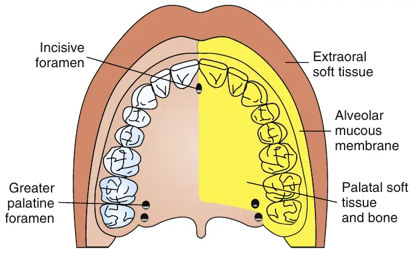
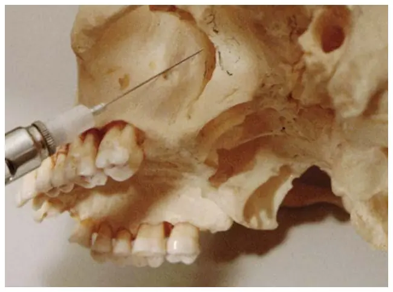

نسخه استخراجشده؛ ترجمه یا تأیید علمی انجام نشده است. وضعیت: captured
مردی ۵۰ ساله برای کشیدن همهی دندانهای باقیماندهی فک بالای راست و آلوئولوپلاستی آمده است. برای بیحسی کل این نیمفک دستکم چهار بلاک جداگانه لازم است. راه کوتاهتری هست؟

بلاک عصب ماگزیلاری (V2) با یک تزریق نیمفک بالا را عمیق بیحس میکند. محلول در حفرهی پتریگوپالاتین (pterygopalatine fossa)، کنار تنهی عصب ماگزیلاری، مینشیند. موفقیتش بیش از ۹۵٪ است.
بهجای چهار بلاک PSA، بلاک ASA (اینفرااوربیتال)، پالاتین بزرگ و نازوپالاتین، یک ورود سوزن و ۱٫۸ میلیلیتر بهجای ۲٫۷ میلیلیتر.
منع: تزریقکنندهی کمتجربه، کودک (بلاکهای دیگر در کودک بسیار موفقاند)، بیمار ناهمکار، التهاب یا عفونت روی محل ورود، و هموفیلی یا مصرف داروی ضدانعقاد.
سوزن: بلند، گیج ۲۵؛ بلند گیج ۲۷ هم قابل قبول است. اول طول سوزن را از نوک تا هاب اندازه بگیر؛ میانگین حدود ۳۲ میلیمتر است.

عارضهی اصلی این راه هماتوم است: اگر شریان ماگزیلاری سوراخ شود، هماتوم سریع بزرگ میشود. این راه لندمارک استخوانی ندارد و سوزنِ نسنجیده بیش از حد فرو میرود. هموستاز هم نمیدهد؛ برای جراحی کمی محلول با تنگکننده در محل عمل اینفیلتره کن.